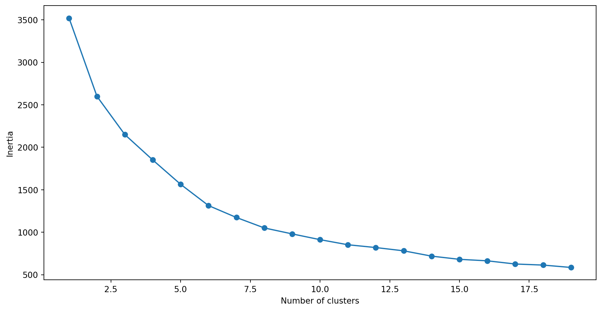
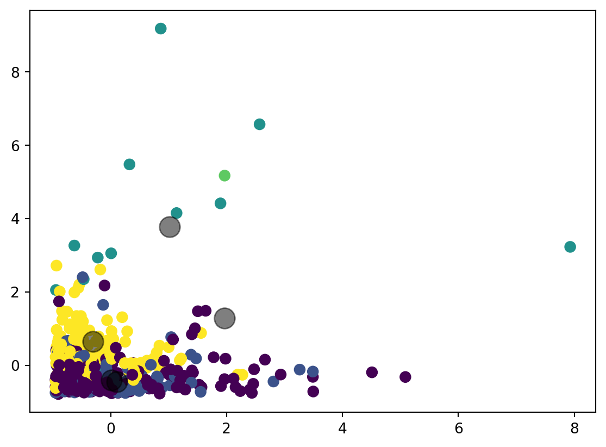

# importing required libraries
import logging
import pandas as pd
import numpy as np
import matplotlib.pyplot as plt
%matplotlib inline
from sklearn.cluster import KMeans
logging.getLogger('sklearn').setLevel(logging.WARNING)Blog 1 – Clustering
The aim of this problem is to segment the clients of a wholesale distributor based on their annual spending on diverse product categories, like milk, grocery, region, etc.
This is a post with executable code.
We will first import the required libraries:
Next, let’s read the data and look at the first five rows:
data=pd.read_csv("customer_data.csv")
data.head()| Channel | Region | Fresh | Milk | Grocery | Frozen | Detergents_Paper | Delicassen | |
|---|---|---|---|---|---|---|---|---|
| 0 | 2 | 3 | 12669 | 9656 | 7561 | 214 | 2674 | 1338 |
| 1 | 2 | 3 | 7057 | 9810 | 9568 | 1762 | 3293 | 1776 |
| 2 | 2 | 3 | 6353 | 8808 | 7684 | 2405 | 3516 | 7844 |
| 3 | 1 | 3 | 13265 | 1196 | 4221 | 6404 | 507 | 1788 |
| 4 | 2 | 3 | 22615 | 5410 | 7198 | 3915 | 1777 | 5185 |
Here, we see that there is a lot of variation in the magnitude of the data. Variables like Channel and Region have low magnitude, whereas variables like Fresh, Milk, Grocery, etc., have a higher magnitude.
Since K-Means is a distance-based algorithm, this difference in magnitude can create a problem. Bring all the variables to the same magnitude
# standardizing the data
from sklearn.preprocessing import StandardScaler
scaler = StandardScaler()
data_scaled = scaler.fit_transform(data)
# statistics of scaled data
pd.DataFrame(data_scaled).describe()| 0 | 1 | 2 | 3 | 4 | 5 | 6 | 7 | |
|---|---|---|---|---|---|---|---|---|
| count | 4.400000e+02 | 4.400000e+02 | 4.400000e+02 | 440.000000 | 4.400000e+02 | 4.400000e+02 | 4.400000e+02 | 4.400000e+02 |
| mean | 1.614870e-17 | 3.552714e-16 | -3.431598e-17 | 0.000000 | -4.037175e-17 | 3.633457e-17 | 2.422305e-17 | -8.074349e-18 |
| std | 1.001138e+00 | 1.001138e+00 | 1.001138e+00 | 1.001138 | 1.001138e+00 | 1.001138e+00 | 1.001138e+00 | 1.001138e+00 |
| min | -6.902971e-01 | -1.995342e+00 | -9.496831e-01 | -0.778795 | -8.373344e-01 | -6.283430e-01 | -6.044165e-01 | -5.402644e-01 |
| 25% | -6.902971e-01 | -7.023369e-01 | -7.023339e-01 | -0.578306 | -6.108364e-01 | -4.804306e-01 | -5.511349e-01 | -3.964005e-01 |
| 50% | -6.902971e-01 | 5.906683e-01 | -2.767602e-01 | -0.294258 | -3.366684e-01 | -3.188045e-01 | -4.336004e-01 | -1.985766e-01 |
| 75% | 1.448652e+00 | 5.906683e-01 | 3.905226e-01 | 0.189092 | 2.849105e-01 | 9.946441e-02 | 2.184822e-01 | 1.048598e-01 |
| max | 1.448652e+00 | 5.906683e-01 | 7.927738e+00 | 9.183650 | 8.936528e+00 | 1.191900e+01 | 7.967672e+00 | 1.647845e+01 |
Create a kmeans function and fit it on the data
# defining the kmeans function with initialization as k-means++
kmeans = KMeans(n_clusters=2, init='k-means++')
# fitting the k means algorithm on scaled data
kmeans.fit(data_scaled)C:\Users\Sabarish M N\AppData\Roaming\Python\Python312\site-packages\sklearn\cluster\_kmeans.py:1416: FutureWarning: The default value of `n_init` will change from 10 to 'auto' in 1.4. Set the value of `n_init` explicitly to suppress the warning
super()._check_params_vs_input(X, default_n_init=10)KMeans(n_clusters=2)In a Jupyter environment, please rerun this cell to show the HTML representation or trust the notebook.
On GitHub, the HTML representation is unable to render, please try loading this page with nbviewer.org.
KMeans(n_clusters=2)
Let’s evaluate how well the formed clusters are. To do that, we will calculate the inertia of the clusters:
# inertia on the fitted data
kmeans.inertia_2599.3873849123083We will store the inertia value of each model and then plot it to visualize the result
SSE = []
for cluster in range(1,20):
kmeans = KMeans(n_clusters = cluster, init='k-means++')
kmeans.fit(data_scaled)
SSE.append(kmeans.inertia_)
# converting the results into a dataframe and plotting them
frame = pd.DataFrame({'Cluster':range(1,20), 'SSE':SSE})
plt.figure(figsize=(12,6))
plt.plot(frame['Cluster'], frame['SSE'], marker='o')
plt.xlabel('Number of clusters')
plt.ylabel('Inertia')C:\Users\Sabarish M N\AppData\Roaming\Python\Python312\site-packages\sklearn\cluster\_kmeans.py:1416: FutureWarning: The default value of `n_init` will change from 10 to 'auto' in 1.4. Set the value of `n_init` explicitly to suppress the warning
super()._check_params_vs_input(X, default_n_init=10)
C:\Users\Sabarish M N\AppData\Roaming\Python\Python312\site-packages\sklearn\cluster\_kmeans.py:1416: FutureWarning: The default value of `n_init` will change from 10 to 'auto' in 1.4. Set the value of `n_init` explicitly to suppress the warning
super()._check_params_vs_input(X, default_n_init=10)
C:\Users\Sabarish M N\AppData\Roaming\Python\Python312\site-packages\sklearn\cluster\_kmeans.py:1416: FutureWarning: The default value of `n_init` will change from 10 to 'auto' in 1.4. Set the value of `n_init` explicitly to suppress the warning
super()._check_params_vs_input(X, default_n_init=10)
C:\Users\Sabarish M N\AppData\Roaming\Python\Python312\site-packages\sklearn\cluster\_kmeans.py:1416: FutureWarning: The default value of `n_init` will change from 10 to 'auto' in 1.4. Set the value of `n_init` explicitly to suppress the warning
super()._check_params_vs_input(X, default_n_init=10)
C:\Users\Sabarish M N\AppData\Roaming\Python\Python312\site-packages\sklearn\cluster\_kmeans.py:1416: FutureWarning: The default value of `n_init` will change from 10 to 'auto' in 1.4. Set the value of `n_init` explicitly to suppress the warning
super()._check_params_vs_input(X, default_n_init=10)
C:\Users\Sabarish M N\AppData\Roaming\Python\Python312\site-packages\sklearn\cluster\_kmeans.py:1416: FutureWarning: The default value of `n_init` will change from 10 to 'auto' in 1.4. Set the value of `n_init` explicitly to suppress the warning
super()._check_params_vs_input(X, default_n_init=10)
C:\Users\Sabarish M N\AppData\Roaming\Python\Python312\site-packages\sklearn\cluster\_kmeans.py:1416: FutureWarning: The default value of `n_init` will change from 10 to 'auto' in 1.4. Set the value of `n_init` explicitly to suppress the warning
super()._check_params_vs_input(X, default_n_init=10)
C:\Users\Sabarish M N\AppData\Roaming\Python\Python312\site-packages\sklearn\cluster\_kmeans.py:1416: FutureWarning: The default value of `n_init` will change from 10 to 'auto' in 1.4. Set the value of `n_init` explicitly to suppress the warning
super()._check_params_vs_input(X, default_n_init=10)
C:\Users\Sabarish M N\AppData\Roaming\Python\Python312\site-packages\sklearn\cluster\_kmeans.py:1416: FutureWarning: The default value of `n_init` will change from 10 to 'auto' in 1.4. Set the value of `n_init` explicitly to suppress the warning
super()._check_params_vs_input(X, default_n_init=10)
C:\Users\Sabarish M N\AppData\Roaming\Python\Python312\site-packages\sklearn\cluster\_kmeans.py:1416: FutureWarning: The default value of `n_init` will change from 10 to 'auto' in 1.4. Set the value of `n_init` explicitly to suppress the warning
super()._check_params_vs_input(X, default_n_init=10)
C:\Users\Sabarish M N\AppData\Roaming\Python\Python312\site-packages\sklearn\cluster\_kmeans.py:1416: FutureWarning: The default value of `n_init` will change from 10 to 'auto' in 1.4. Set the value of `n_init` explicitly to suppress the warning
super()._check_params_vs_input(X, default_n_init=10)
C:\Users\Sabarish M N\AppData\Roaming\Python\Python312\site-packages\sklearn\cluster\_kmeans.py:1416: FutureWarning: The default value of `n_init` will change from 10 to 'auto' in 1.4. Set the value of `n_init` explicitly to suppress the warning
super()._check_params_vs_input(X, default_n_init=10)
C:\Users\Sabarish M N\AppData\Roaming\Python\Python312\site-packages\sklearn\cluster\_kmeans.py:1416: FutureWarning: The default value of `n_init` will change from 10 to 'auto' in 1.4. Set the value of `n_init` explicitly to suppress the warning
super()._check_params_vs_input(X, default_n_init=10)
C:\Users\Sabarish M N\AppData\Roaming\Python\Python312\site-packages\sklearn\cluster\_kmeans.py:1416: FutureWarning: The default value of `n_init` will change from 10 to 'auto' in 1.4. Set the value of `n_init` explicitly to suppress the warning
super()._check_params_vs_input(X, default_n_init=10)
C:\Users\Sabarish M N\AppData\Roaming\Python\Python312\site-packages\sklearn\cluster\_kmeans.py:1416: FutureWarning: The default value of `n_init` will change from 10 to 'auto' in 1.4. Set the value of `n_init` explicitly to suppress the warning
super()._check_params_vs_input(X, default_n_init=10)
C:\Users\Sabarish M N\AppData\Roaming\Python\Python312\site-packages\sklearn\cluster\_kmeans.py:1416: FutureWarning: The default value of `n_init` will change from 10 to 'auto' in 1.4. Set the value of `n_init` explicitly to suppress the warning
super()._check_params_vs_input(X, default_n_init=10)
C:\Users\Sabarish M N\AppData\Roaming\Python\Python312\site-packages\sklearn\cluster\_kmeans.py:1416: FutureWarning: The default value of `n_init` will change from 10 to 'auto' in 1.4. Set the value of `n_init` explicitly to suppress the warning
super()._check_params_vs_input(X, default_n_init=10)
C:\Users\Sabarish M N\AppData\Roaming\Python\Python312\site-packages\sklearn\cluster\_kmeans.py:1416: FutureWarning: The default value of `n_init` will change from 10 to 'auto' in 1.4. Set the value of `n_init` explicitly to suppress the warning
super()._check_params_vs_input(X, default_n_init=10)
C:\Users\Sabarish M N\AppData\Roaming\Python\Python312\site-packages\sklearn\cluster\_kmeans.py:1416: FutureWarning: The default value of `n_init` will change from 10 to 'auto' in 1.4. Set the value of `n_init` explicitly to suppress the warning
super()._check_params_vs_input(X, default_n_init=10)Text(0, 0.5, 'Inertia')
Looking at the above elbow curve, we can choose any number of clusters between 5 to 8.
Set the number of clusters as 6 and fit the model.
# k means using 5 clusters and k-means++ initialization
kmeans = KMeans(n_clusters = 5, init='k-means++')
kmeans.fit(data_scaled)
pred = kmeans.predict(data_scaled)C:\Users\Sabarish M N\AppData\Roaming\Python\Python312\site-packages\sklearn\cluster\_kmeans.py:1416: FutureWarning: The default value of `n_init` will change from 10 to 'auto' in 1.4. Set the value of `n_init` explicitly to suppress the warning
super()._check_params_vs_input(X, default_n_init=10)Value count of points in each of the above-formed clusters
frame = pd.DataFrame(data_scaled)
frame['cluster'] = pred
frame['cluster'].value_counts()cluster
0 210
4 126
1 91
2 12
3 1
Name: count, dtype: int64So, there are 234 data points belonging to cluster 4 (index 3), 125 points in cluster 2 (index 1), and so on.
Now, lets plot the clusters according to midpoints and differentiate based on colours.
plt.scatter(data_scaled[:, 2], data_scaled[:, 3], c=pred, s=50, cmap='viridis')
centers = kmeans.cluster_centers_
plt.scatter(centers[:, 2], centers[:, 4], c='black', s=200, alpha=0.5);